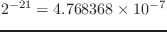

object [クラス]
:super
:slots
-
- objectは、最も基本のクラスである。それは、クラス継承の最上位に位置する。
スロット変数が定義されていないため、objectはインスタンスを作るために
使用しない。
:prin1 &optional stream &rest mesg [メソッド]
-
-
標準の再読み込可能なオブジェクトフォーマットのなかにあるオブジェクトを
表示する。
そのクラス名とアドレスは、角括弧でくくられ、符号を前に置く。
どのオブジェクトのサブクラスもmesg文字列で説明するマクロsend-super
を使ってもっと広範囲な情報と一緒にそれ自身を印刷するのにこの方法を
使用することができる。
オブジェクトは、もし#で始まるなら、再読み込み可能である。
そのクラス名・正確なアドレス・どのLispでも読み込可能な情報・
>をあとに
従えて。
全てのデータオブジェクトは数値を除いて、objectを継承している。
この構文で書式の表示が得られる。（symbolや文字列でも構わない）
この構文で述べることは、symbolにsetqし忘れたデータオブジェクトを
把握することができる。
ただし、表示された後にガーベージコレクションが起こらない限りである。
:slots [メソッド]
-
-
変数名のリストおよびオブジェクトの全てのスロットと対になる値を返す。
このリストにassocを適用することにより、スロットの詳細値が得られる。
しかしながら、それらを変更することはできない。
propertied-object [クラス]
:super object
:slots plist
-
- property-listを持つオブジェクトを定義する。
他のCommon Lispと違って、
EusLispは、たとえ、symbolでなかったとしても、property-listを持つ
propertied-objectを継承するどんなオブジェクトも
許可する。
:plist &optional plist [メソッド]
-
-
もしplistが明記されるならば、このオブジェクトのplistスロットに
設定する。そのため、以前のplistの値はなくなる。
plistは、
((indicator1 . value1) (indicator2 . value2) ...)の書式にすべきである。
それぞれのindicatorは、eq関数で等価性をテストされたどのような
lisp書式も可能である。
symbolがindicatorとして用いられたとき、内部パッケージを広く実行される
等価性のチェックを確実にするためにキーワードの使用を推薦する。
:plistは、主なplistを返す。
:get indicator [メソッド]
-
-
plistのなかでindicatorと結び付く値を返す。
(send x :get :y) == (cdr (assoc :y (send x :plist)))
:put indicator value [メソッド]
-
-
plistのなかで、valueとindicatorを結び付ける。
:remprop indicator [メソッド]
-
-
plistからindicatorとvalueの組を削除する。
さらに、:getを試すとvalueとしてNILを返す。
:name &optional name [メソッド]
-
-
plistのなかの:name特性を定義し、取り出す。
この特性は、表示のために使用される。
:prin1 &optional stream &rest mesg [メソッド]
-
-
再読み込み可能な書式のオブジェクトを表示する。
もしオブジェクトが:name特性を持っているならば、
オブジェクトのアドレスの後に特性を表示する。
metaclass [クラス]
:super propertied-object
:slots name super cix vars types forwards methods
-
- metaclassは、複数クラスを定義する。独自のクラス変数を持つ複数クラスは、
それらのスーパークラスとしてmetaclassを定義しなければならない。
:new [メソッド]
-
- このクラスのインスタンスを生成し、全てのスロットをNILにした後、
それを返す。
:super [メソッド]
-
-
このクラスのスーパークラスオブジェクトを返す。
一旦クラス定義したスーパークラスを変更することはできない。
:methods [メソッド]
-
-
このクラスで定義された全てのメソッドのリストを返す。
そのリストは、メソッド名とパラメータと本体を組みにしたリスト
によって構成されたリストである。
:method name [メソッド]
-
-
nameで関連づけられたメソッド定義を返す。
もし見つからなければ、NILを返す。
:method-names subname [メソッド]
-
-
メソッド名のなかにsubnameを含む全てのメソッド名のリストを返す。
メソッドは、このクラスのなかのみ探索される。
:all-methods [メソッド]
-
-
このクラスとその全てのスーパークラスのなかで定義されているすべてのメソッドの
リストを返す。
言い替えると、このクラスのインスタンスは、これらのメソッドを
実行することができる。
:all-method-names subname [メソッド]
-
-
subnameと一致する全てのメソッド名のリストを返す。
その探索は、このクラスからobjectまで実行される。
:slots [メソッド]
-
-
スロット名のベクトルを返す。
:name [メソッド]
-
-
このクラスのsymbol名を返す。
:cid [メソッド]
-
-
このクラスと同一であることを示すために、このクラスのインスタンスすべてに
割り当てられた整数を返す。
これは、システム内部のクラステーブルへのインデックスで、
このクラスの下に新しいサブクラスが定義されたとき、変更される。
:subclasses [メソッド]
-
-
このクラスの直接のサブクラスのリストを返す。
:hierarchy [メソッド]
-
-
このクラスの下に定義された全てのサブクラスのリストを返す。
全てのクラス継承の広範囲なリストを得るためには、class-hierarchy関数
を呼び出す。
find-method object selector [関数]
-
-
objectのクラスやそのスーパークラスのなかで、selectorと一致する
メソッドを探索する。
この関数は、objectのクラスが不確かで、そのobjectが
エラーなしにメッセージを受け取ってくれるかどうかを知りたい時に役立つ。
2016-03-23